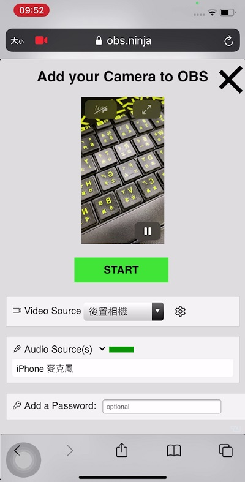
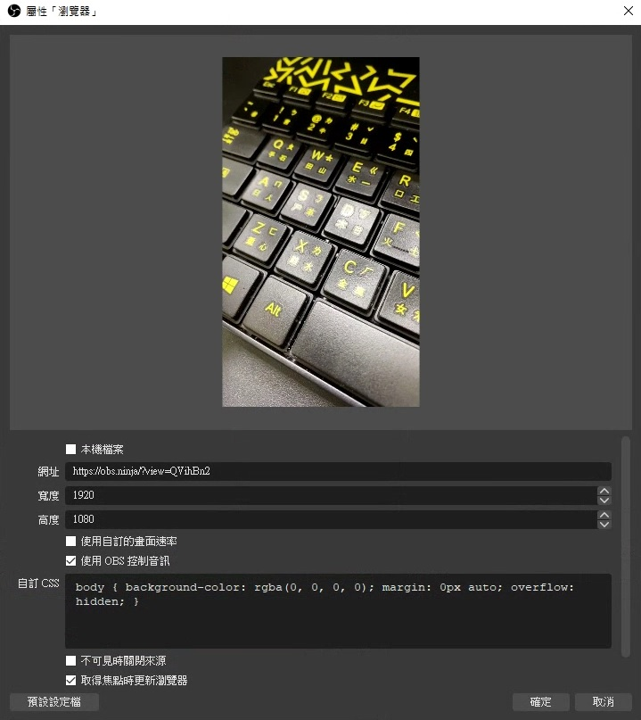

最近找到了一個開源的酷東西
不用安裝任何軟體、不用插任何線
只要有網路！
就可以把手機拍到的畫面投到電腦上
OBS.Ninja 如何運作
它使用瀏覽器內建的 WebRTC API 功能
透過點對點 (P2P) 的方式進行傳輸
(所以不適合多人使用)
雖然它的名字有 OBS
但其實跟 OBS 沒有關係
不過作者有開發一些與 OBS 相容的功能
操作步驟
- 手機瀏覽器開啟 https://obs.ninja/
- 點擊
Add your Camera to OBS - 允許使用麥克風與相機
- 選擇
Video Sourse要使用前置還是後置相機 - 點擊旁邊的齒輪，選擇解析度
- 選擇
Audio Sourse要用什麼收音 - 點擊
START - 複製上方的 URL 到電腦的瀏覽器上，並點擊播放

進階參數
URL 網址
- 發送端網址:
https://obs.ninja/?push=XXXXXXX - 觀看端網址:
https://obs.ninja/?view=XXXXXXX
其中 XXXXXXX 可以自己手動設定
但如果已經有人使用了，就會顯示錯誤
設定觀看端 bitrate
使用 5000 kbps 來觀看 (預設 2500 kbps)
e.g. https://obs.ninja/?view=xxxxxxx&bitrate=5000
設定發送端的解析度
發送 1080p60 (需視硬體支援度)
e.g. https://obs.ninja/?push=xxxxxxx&quality=0
或是
e.g. https://obs.ninja/?push=xxxxxX&width=1920&height=1080&framerate=60
設定 codec
使用 vp8 來編解碼
e.g. https://obs.ninja/?view=xxxxxxx&codec=vp8
不同的 codec 對畫面有不同影響
需要的 CPU 效能也不同
👉 其他更多詳細的參數可參考 這裡
疑難排解
顯示串流狀態資訊
- 桌機: 按著 Ctrl 並同時點擊滑鼠左鍵
- 手機: 兩指一起點擊螢幕
可以看到作業系統、連接方式、編碼器
Bitrate、丟包率、延遲時間等資訊
檢查網速
前往 https://obs.ninja/speedtest
選擇鏡頭來源後，點擊 START
下方有三個圖表:
- Bitrate (kbps): 網速
- Buffer delay (ms): 延遲時間
- Packet Loss (%): 丟包率
網速建議至少 2000 kbps
丟包率低於 1% 以下
減少卡頓
- 避免使用 Wi-Fi，因為它很受環境影響
- 避免在網路塞車時間使用，除非你有網路專線保證頻寬
- 如果沒有有線網路，可以用手機吃到飽，透過 USB 來分享網路給電腦
減少延遲
發送端和接收端可以在同個 LAN 上
這樣就不會經過 WAN
只需把手機和電腦都連到同一台無線 AP 上即可
用 OBS 直播
如果你想要直播你手機拍的到畫面
可以使用 OBS 的 Browser Source 功能

- 增加瀏覽器來源
- 輸入網址:
https://obs.ninja/?view=XXXXXXX - 設定寬度與高度
- 勾選
使用 OBS 控制音訊 - 勾選
取得焦點時更新瀏覽器 - 點擊
確定
如果手機旋轉變橫的
OBS 的畫面也會變橫的喔
如果你還有其他的問題
可以到 reddit 上詢問
作者都會詳細的回答喔